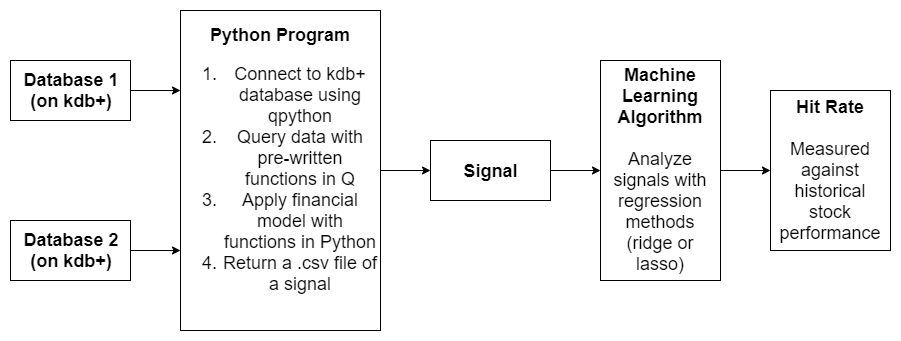

I created 10 features for a machine learning algorithm in order to improve the performance of a quantitative equities portfolio. I mainly used Python to complete the project, but I also learned kdb+ and Q in order to quickly query a large amount of data. Additionally, I learned machine learning concepts (such as lasso and ridge regressions) in order to understand how the system worked; this allowed me to produce 5 features with a hit rate of above 50%.
In addition to using my technical skills in programming and data science, I also demonstrated my ability to learn quickly on-the-job; although I could have used Python alone to complete the project, I decided to learn kdb+ and Q because I felt that those tools were better suited for machine-learning applications where I had to query more than 10GB of data for each feature construction.
While the specific details about the data used for signal construction are confidential, I used two different databases (in general) to combine information and generate a signal. The machine learning algorithm would produce decisions regarding buying or selling a certain financial asset. The following flowchart summarizes the process:
The hit rates were measured against historical portfolio performances; the goal was to answer the question, "How would we have performed in the past if we invested according to what the machine learning algorithm says?" The rates can depend on various factors, including the quality of data and the accuracy of the financial model used.